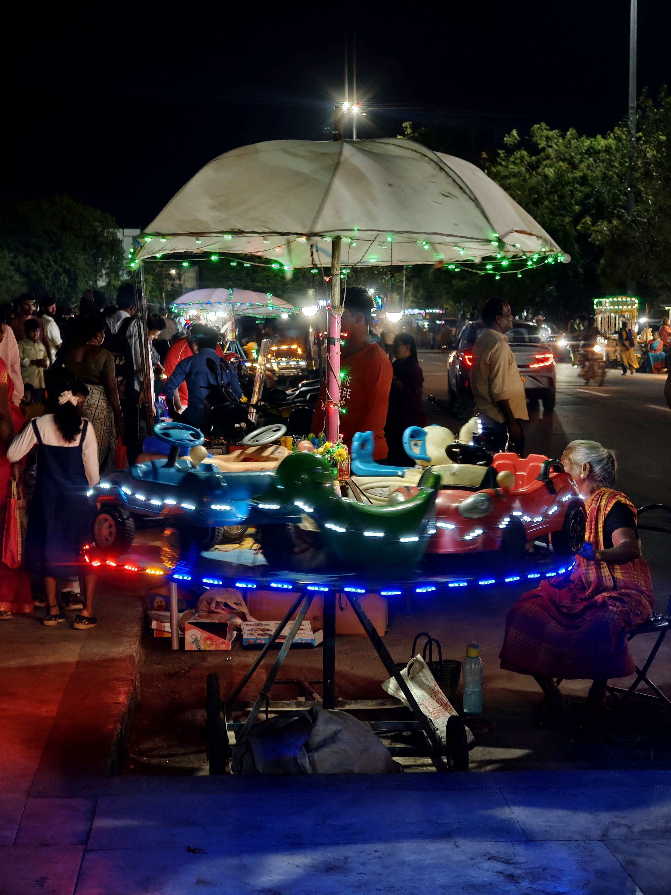
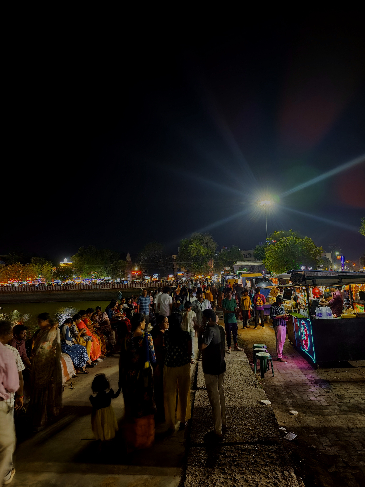

Biography
"I am a Full-Stack Developer and Data Analyst who engineers intelligent, scalable systems. My career is defined by bridging the gap between theoretical research—like computer vision and machine learning—and high-stakes enterprise operations. Whether I am optimizing algorithms for robotic hardware or managing critical system incidents using Splunk and ServiceNow, my focus is always on precision, speed, and reliability. As a competitive shooter and national medalist, I bring the same intense focus and discipline from the firing line directly to the terminal, architecting data-centric platforms that perform flawlessly under pressure."
Enterprise Operations
Aug 2025 - Present | Coimbatore
Programmer Analyst Trainee
Cognizant Technology Solutions
Maintaining and enhancing enterprise applications using Java, Angular, Spring Boot, SQL, and AWS. Active involvement in monitoring and incident management through Splunk and ServiceNow to ensure high-availability system stability.
Dec 2022 - Feb 2023 | Madurai
Technical Intern
Tarcin Robotics LLP.
Gained expertise in the Design, Fabrication, and Development of Algorithms for robotic blocks, bridging theoretical robotics with practical hardware deployment.
Publications
Analytical Deep-Dives
Spotify Analysis Dashboard
A robust application designed to provide users with detailed insights into their Spotify usage. Leverages Spotify's API and powerful data visualization libraries to offer a comprehensive view of music preferences.
View arrow_forwardZomato Market Analysis
Web application analyzing user food preferences and ordering frequencies on a macro scale. Built to extract actionable business insights from raw consumer data streams.
View arrow_forwardPhotography Collection
Capturing perspective, contrast, and structure outside the terminal.

